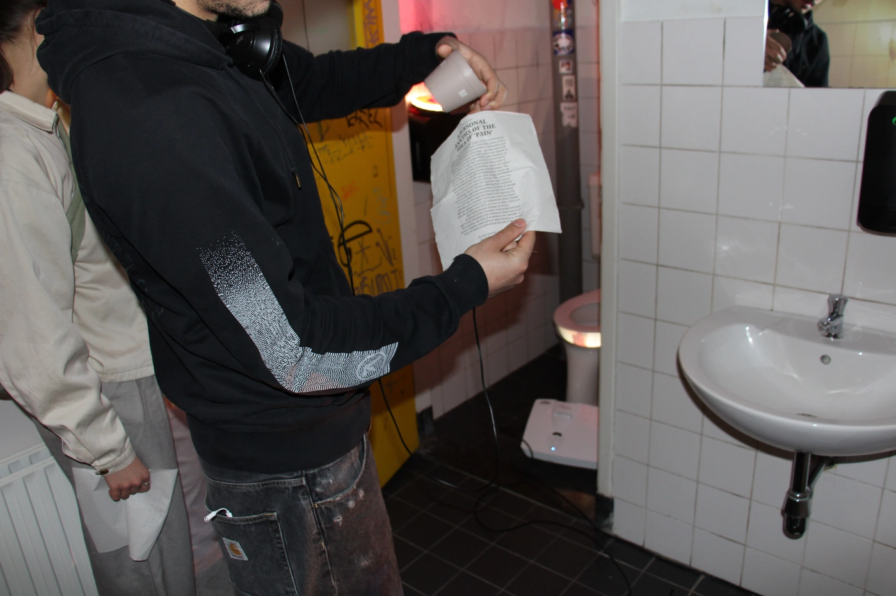
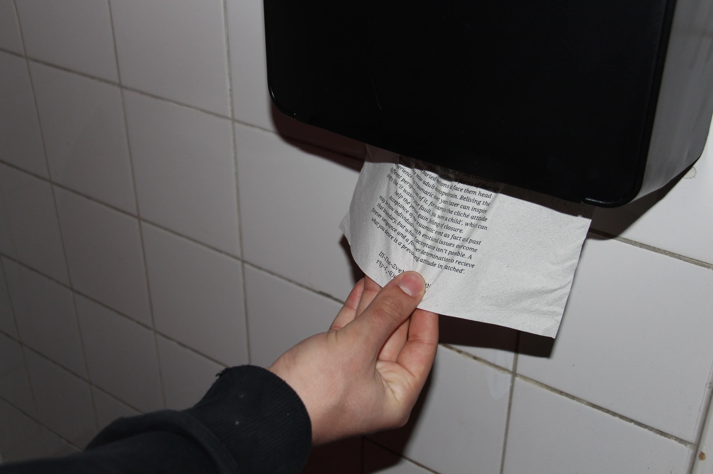
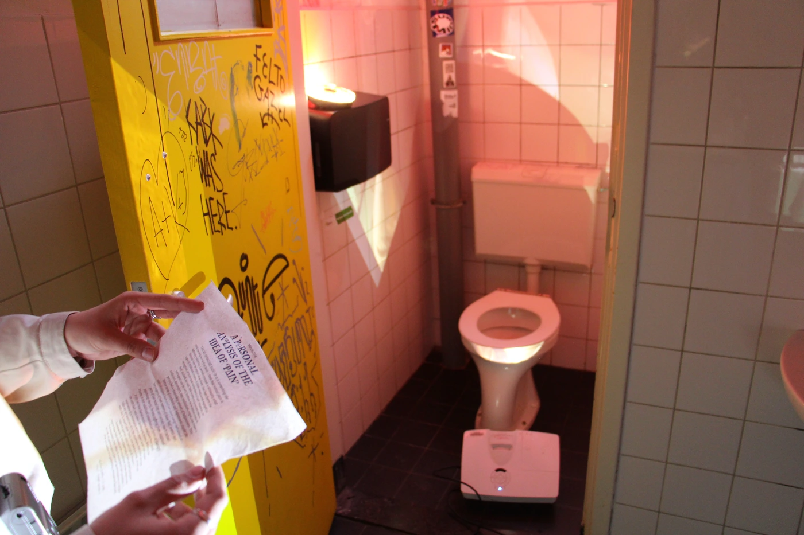
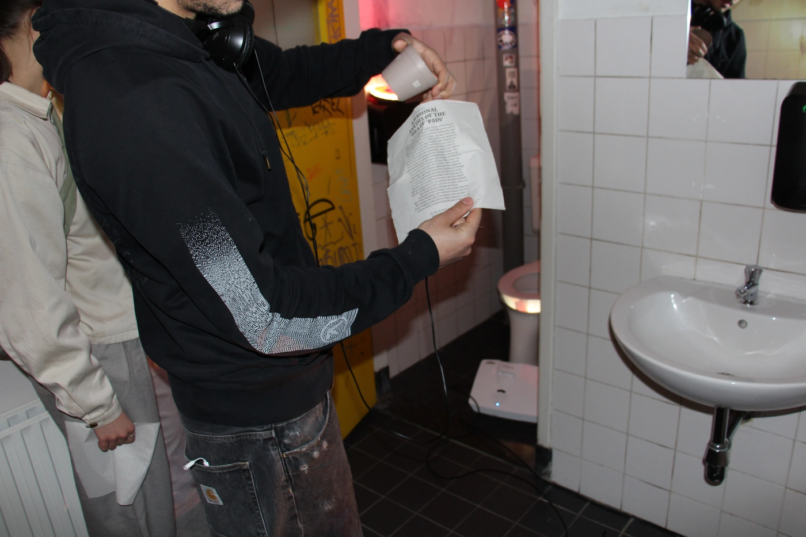
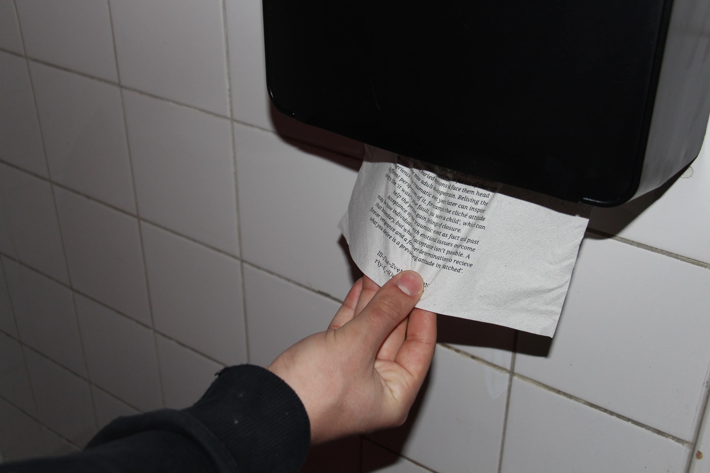
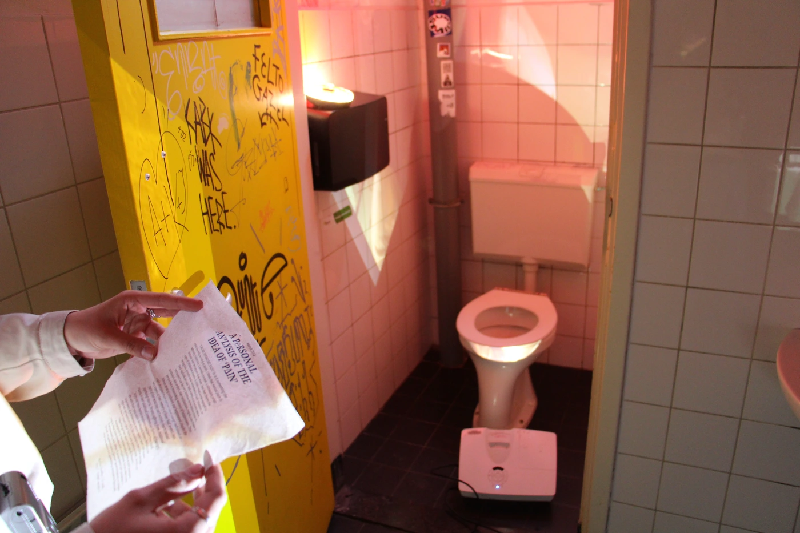
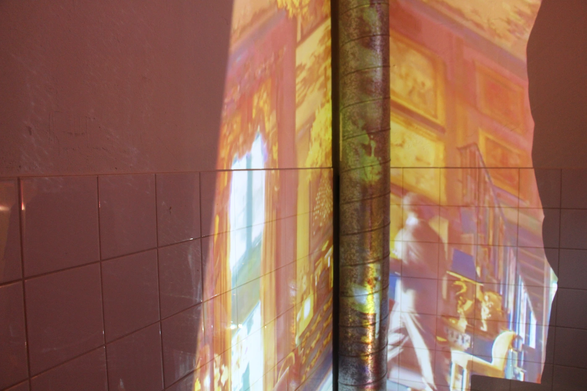
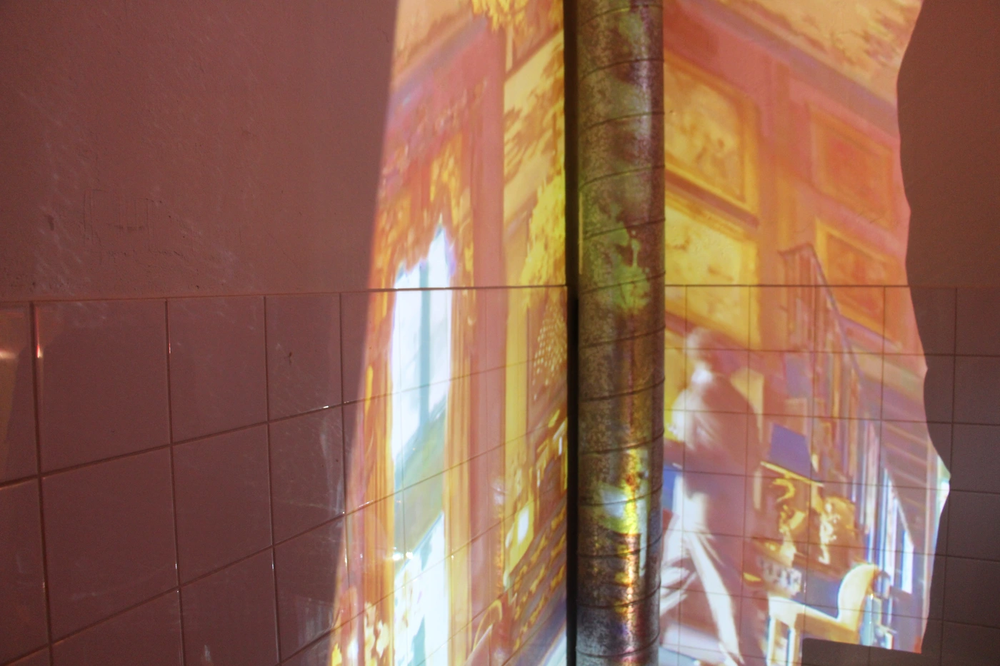
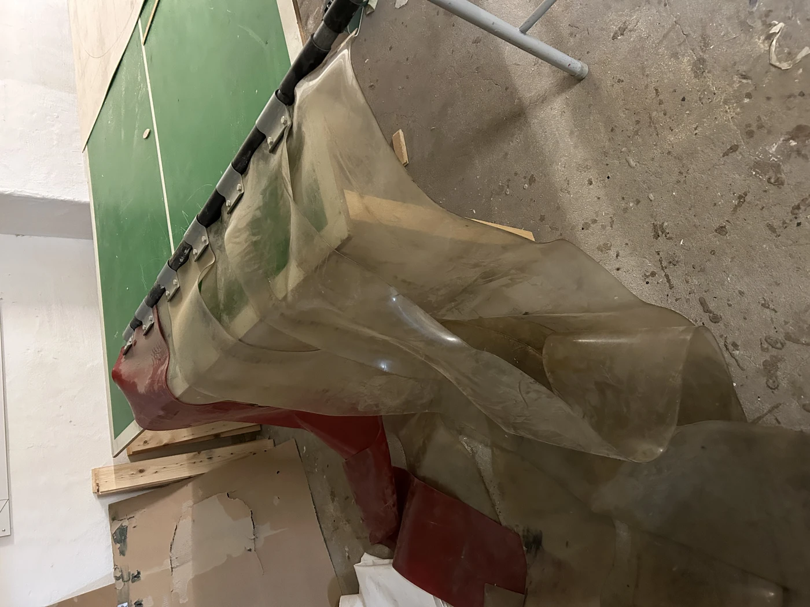

olvehyh
« In The Event Of Pain, Try Not To Think About It »
A series of three installations about the quality of human pain and suffering,
inspired by the 2020 television series Ratched.
Installation
Spatial Design · Lighting Design · Video Editing · Silkscreening
Den Haag, 2023
Materials: Projectors, LED lights, PVC strip curtain, Silkscreened paper towels
Location: KABK bathroom
Spatial Design · Lighting Design · Video Editing · Silkscreening
Den Haag, 2023
Materials: Projectors, LED lights, PVC strip curtain, Silkscreened paper towels
Location: KABK bathroom
 





 

